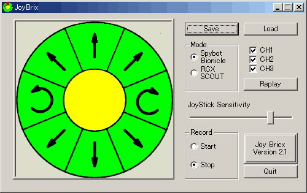
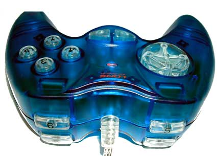
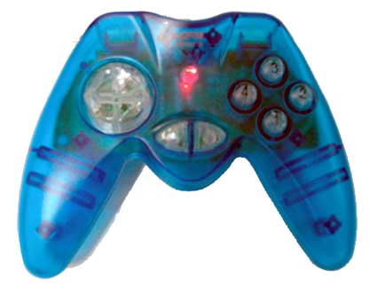
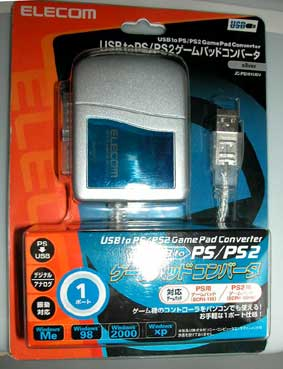
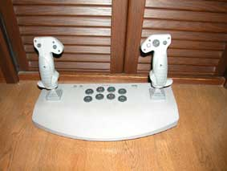
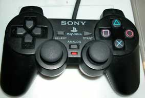

MindStorms SDK 2.5 was released in December, 2002 by TLG.
I thought that all the things for which I want to LEGO Tower could be performed.. But when I start to build an application, there are some problems.
Ex. The TowerApi.dll and the TowerApi.h are included, but no TowerApi.lib.
Although, if I don't have *.dll, I can use LoadLibrary() and set the pointer to a function to the entrance of each function,
This operation requires time and effort and it is easy to make a mistake. So I make a tool that do this operation automatically and make an application named LTremo76 for showed the example.
Because the device driver for USB LEGO Tower is included in MindStorms SDK 2.5, we can use the USB LEGO Tower without RIS 2.0 set and enjoy NQC and etc.
Of course, USB LEGO Tower is made for RCX, but thought that another function was hidden in USB LEGO Tower.
I made LTremo76 for an example of use TowerApi, so it isn't convenience for an application program.
Although the program becomes complicated, I made the application named JoyBricx for easy to play.
The JoyBricx is a application program for remote controller for the Spybots and the Bionicle RC Fighter using the Joystick and Game PAD.
You could use not only Joystick and Game PAD but also the keyboard and the mice.
It remembers all your operation to replay, save and load files.
And now, I release the now version "JoyBricx".
I put here the zipped archive file, included the source code. It is not modify the system registry and only delete the holder for un-install.
It is too easy. So you may be early using it rather than reading this manual :)

# I wanted to write this program and have bought LOAS JOP-U234-CBL (USB Game Pad).


| joypad key | Operation | Keyboard | mice buttons |
| X-axis | right or left direction. | left-clicke on the ring | |
| Y-axis | forward or reward direction | left-clicke on the ring | |
| Button 1 | CH 1 | F1 | CH 1 |
| Button 2 | CH 2 | F2 | CH 2 |
| Button 3 | CH 3 | F3 | CH 3 |
| Button 4 | All Channel | F4 | |
| Button 5 | Start recording | F5 | Start Button |
| Button 6 | End recording | F6 | Stop Button |
| Button 7 | Change to Spybot Mode | F7 | Spybot/Bionicle Button |
| Button 8 | Change to RCX Mode | F8 | RCX/SCOUT Button |
Although Spybot and RCX/SCOUT cannot be moved simultaneously, but you can change by mode button momentary.
All of action and the change of a channels are logged after push "Start recording" until push "End recording".
The warning dialog is pop up, when you have no saved actions and start new recording or loading file.
Click on the "Replay button" to playback recorded or loaded file.
When you save the actions, if you select *.jbx as suffix that is the native format of this program. In this case, plural sets operations and the mode change operations are recorded, it can be made to replay completely.
Otherwise you select *.nqc. If you choose RCX mode, you will get only the operation performed to RCX/SCOUT. And if you select the Spybot mode, only the operation performed in channel 1 will be outputted.
Using USB to PS2/PS game controller, I tested 2 devices for "Sony PlayStation 2".

Analog joystick.

Game pad for PS2.

They work good.
Please keep the use the license agreement of SDK 2.5.
| Feb. 2, 2003 | v1.0 | Beginning of history |
| Feb. 8, 2003 | v2.0 | RCX support, Export NQC |
| Feb. 9, 2003 | v2.1 | Joystick sensivity adj. |
Back to "Cave of MindStorms"
Copyright (C) 2003 mac@research.co.jp